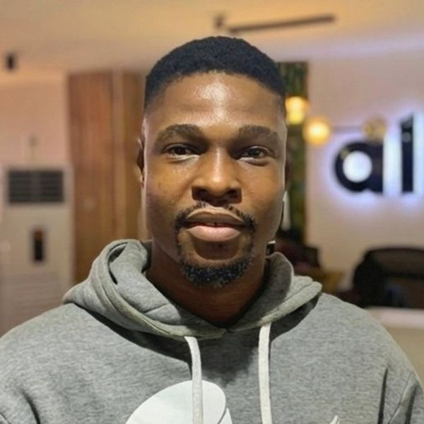
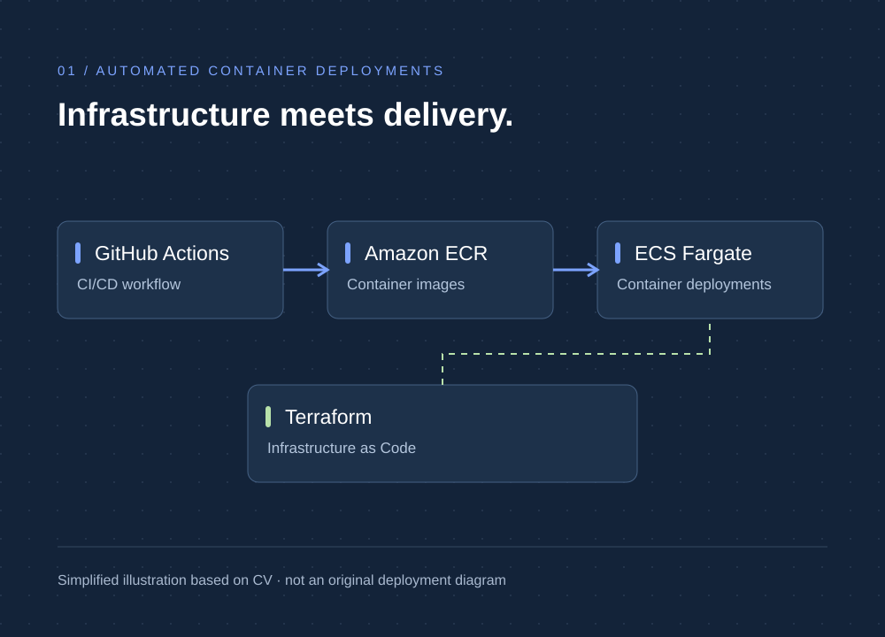
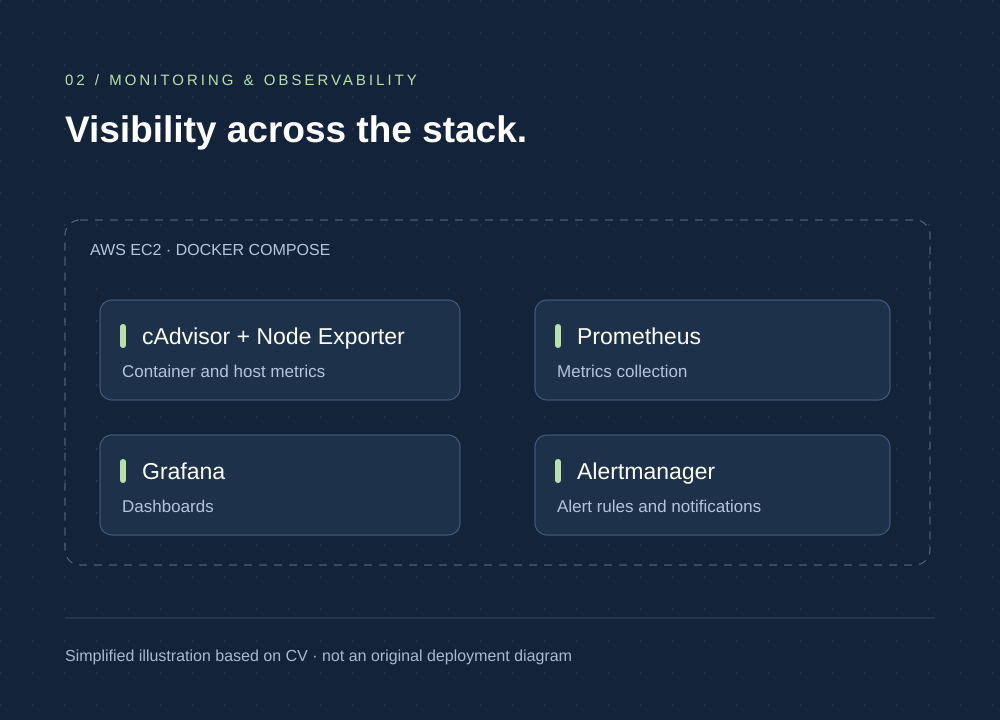
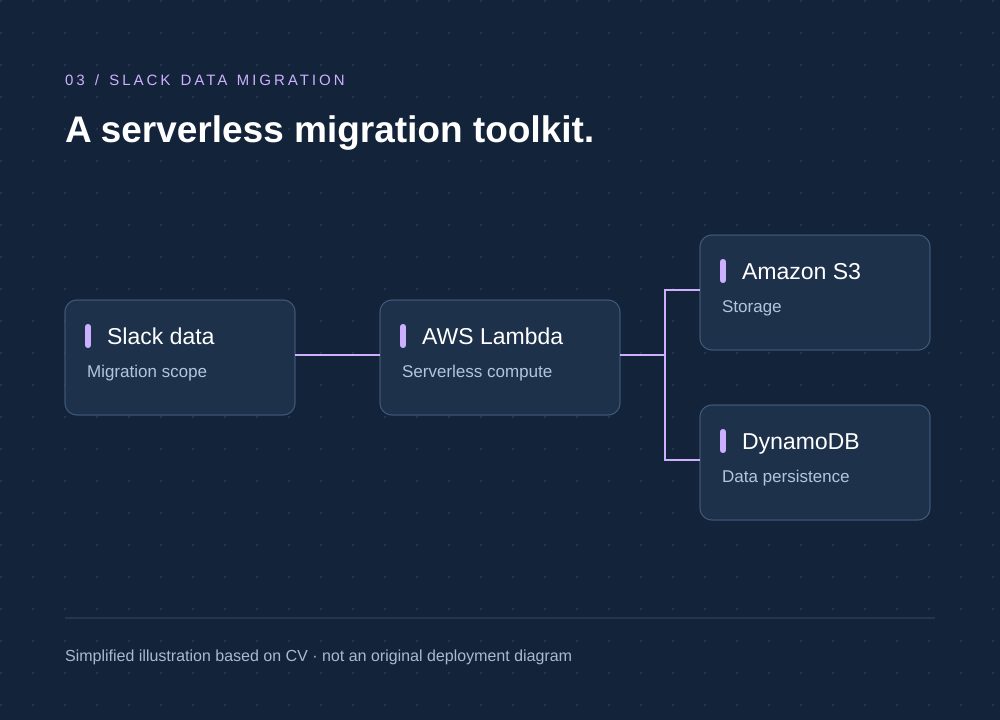
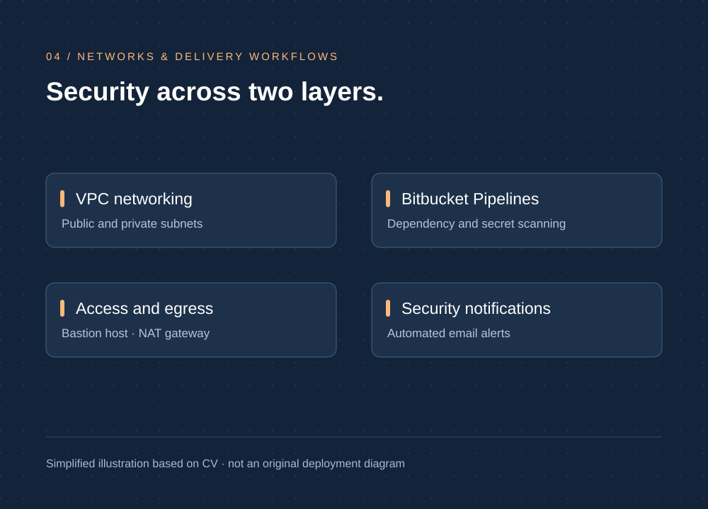
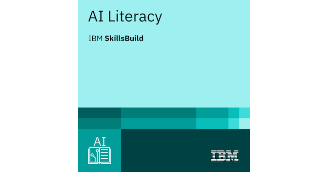

Design with context
Translate requirements into AWS architecture, weighing security, availability, scalability, and cost.
SOLUTIONS ARCHITECTUREWISDOM DAVID / AWS SOLUTIONS ARCHITECT
I’m Wisdom David, an AWS Solutions Architect and Cloud & DevOps Engineer. I connect solution design with hands-on delivery—from secure AWS infrastructure to automated deployments and observability.

01 / ABOUT ME
I bring cloud engineering experience to the decisions behind a solution.
At ALLUVIUM, I work as an AWS Cloud/DevOps Engineer, building infrastructure, automating container deployments, and implementing monitoring and security checks. That practical experience informs how I approach reliability, maintainability, and delivery.
My primary focus is AWS solutions architecture: understanding business needs, evaluating trade-offs, and designing secure, cost-conscious systems. DevOps is a complementary strength—the ability to turn a design into repeatable infrastructure and observable services.
My background in ICT instruction and robotics mentoring also shapes how I communicate technical ideas and work with others.
Explore my experience02 / ARCHITECTURE & DELIVERY
Solutions architecture leads my work. Cloud and DevOps engineering connect the design to implementation and operations.
Translate requirements into AWS architecture, weighing security, availability, scalability, and cost.
SOLUTIONS ARCHITECTUREUse Terraform, container services, and CI/CD pipelines to make infrastructure and deployments repeatable.
CLOUD & DEVOPS ENGINEERINGConnect dashboards, alerting, stress testing, and security checks to the way systems are maintained.
OBSERVABILITY & SECURITY03 / SELECTED ENGINEERING WORK
Selected work from my AWS Cloud/DevOps engineering role at ALLUVIUM.

01 / CONTAINER DELIVERYTERRAFORM · ECS FARGATE · ECR · GITHUB ACTIONS
Automated container deployments to Amazon ECS Fargate using Terraform, Amazon ECR, and GitHub Actions, reducing manual deployment effort.
Used Terraform alongside ECS Fargate and ECR, with GitHub Actions to automate container deployments.
Implemented scalable CI/CD pipelines to reduce manual deployment effort and make container delivery repeatable.

02 / OBSERVABILITY
Designed and deployed Prometheus, Grafana, cAdvisor, and Node Exporter on AWS EC2 using Docker Compose.
Built Grafana dashboards and Alertmanager rules for real-time monitoring. Used stress testing to validate alert thresholds and improve system reliability.
EC2 · Docker Compose · Prometheus · Grafana

03 / SERVERLESS SOLUTIONS
Developed a serverless Slack data migration solution using AWS Lambda, Amazon S3, and DynamoDB.
Combined serverless compute and AWS storage services for the migration solution. Detailed data flows and implementation artifacts can be added when available for public sharing.
Lambda · S3 · DynamoDB

04 / INFRASTRUCTURE & SECURITY
Designed VPC architecture with public/private subnets, a NAT gateway, and a bastion host.
Alongside network design, implemented DevSecOps practices in Bitbucket Pipelines: dependency scanning, secret/credential detection in commits, and automated security alerts by email.
VPC · NAT gateway · Bitbucket Pipelines
04 / TECHNICAL CAPABILITIES
Tools and capabilities drawn from my professional experience, CV, and architecture assessment work.
EC2 · ECS / Fargate · Lambda · IAM · VPC · S3 · API Gateway · ECR · DynamoDB · Requirements analysis · Architecture trade-offs · AWS Pricing Calculator
Terraform · Docker · Docker Compose · GitHub Actions · Bitbucket Pipelines · Deployment automation · Dependency and secret scanning
Prometheus · Grafana · Alertmanager · CloudWatch · cAdvisor · Node Exporter · Portainer · Stress testing
Kubernetes and cloud-native concepts supported by KCNA certification.
Git · GitHub · Bitbucket · Technical proposals · Presentations · Teaching & mentoring · Problem-solving · Attention to detail · Teamwork · Initiative & creativity
05 / CERTIFICATIONS & COURSES
Three certifications and five courses, spanning cloud architecture, DevOps, professional development, and AI literacy.

THE LINUX FOUNDATION
Kubernetes & cloud-native foundations
View credential ↗
Learning across technology and professional practice. Provider logos identify the course organisation; badges link to the corresponding credential.
ALX AFRICA · 2025
SOLAVISETECH · 2024
ALX AFRICA · 2025

ATLASSIAN · 2024
ALX branding identifies my learning history and does not imply endorsement or partnership.
06 / EXPERIENCE & EDUCATION
EDUCATION
Yaba College of Technology
2024 – PRESENT · ALLUVIUM
Design and deploy AWS infrastructure, automate container delivery, and implement monitoring and security checks.
2023 – 2024 · TINUOLA INTERNATIONAL COLLEGE
Taught Computer Studies to senior secondary students and prepared them for WAEC through structured lessons, practical exercises, revision materials, and continuous assessment.
Contributed to approximately 80% of students achieving A1 in Computer Studies.
2022 – 2023 · EDUPOINT
Taught robotics and coding with Arduino, microcontrollers, sensors, automation, and basic electronics. Coached students through prototype design, testing, and presentation for RoboCodeFest.
Co-led an automated waste management project that achieved 2nd place in the competition.
07 / LET’S CONNECT
For AWS solutions architecture, cloud engineering, and DevOps opportunities. Based in Lagos, Nigeria.
wisdom.david.tech@gmail.comExplore my professional experience, technical skills, certifications, and courses in my CV.
Download CVPDF · Updated 7 October 2026